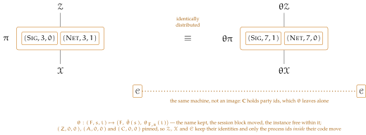

Chapter 1 records that a functionality’s code hardly reads its own session and never its instance number: \(s\) occurs at line 3 of \(\opl {Guard}\), in the wrappers that invoke it, and in Definition 1.3, and \(i\) occurs nowhere. This chapter turns that observation into a statement. Renaming sessions and instances is an isomorphism of executions, so an emulation proved at one process id holds at every other, within the same \(\varepsilon \) and at the same budgets. One hygiene condition is needed and no more — that a functionality reachable from outside every session be reachable from every session, which every machine the paper specifies satisfies — and isolating it is half the work. That is what lets a realization be written for a single session, as \(\Fsig \) of Chapter 15 is, and read as covering the rest.
Definition 7.1 (Relocation). A relocation is a permutation \(\theta \) of the process ids such that
Conditions (i) and (ii) say exactly that on the standard names
for a permutation \(\hat \theta \) of session ids and, for each name and session, a permutation \(\theta _{F,s}\) of instance numbers — we write the two components of a relocation this way rather than with letters of their own, \(\sigma \) and \(\iota \) being spoken for by Proposition 4.19 and Definition 4.17, whose notation the proofs below import. Names are kept, because \(\opl {Guard}\) and \(\WF \) match by name and nothing may become a different functionality; sessions are permuted as blocks, because line 3 asks whether two ids share a session and not which; and instances are permuted freely within a block, that component being read nowhere.
Condition (iii) pins the three process ids that occur as literals in code: \(A\), in the hook \((A,\id .P)\) of \(\opl {Mediate}\); \(C\), in the register read \((C,\id .P)\) of lines 2 and 6; and \(Z\), at line 2 and in the relay of line 5. Every identity named outright in the paper is one of these three paired with a party in scope, so pinning the three pins them all — and it pins those three and no more. It must not be read as pinning every id of a reserved name, and the difference is not cosmetic: by Chapter 1 the set \(\Apid \) holds a triple \((A,s,i)\) for every \(s\) and \(i\), only \((A,0,0)\) ever occurring, so a condition fixing all of them and read together with (ii) unrestricted would give \(\hat \theta (s) = s\) at every \(s\) and leave no relocation that moves a session at all. Restricting (ii) to the standard names is the other half of the same care: \(\hat \theta \) is determined there, and the ids of a reserved name that never occur are left to move harmlessly inside their own class, which Proposition 7.5 shows is where they stay.
Nothing here pins session \(0\), and \(\hat \theta \) is free to move it. That freedom has a price, and it is worth seeing exactly where, since this is the only point at which the framework tells one session from another. Line 3 compares the caller’s session while \(\op {global}\) is tested of the callee, and the three machines the execution supplies sit in session \(0\); so a call from \(\Adv \) or \(\Zenv \) to a callee that is not global passes that line exactly when the callee’s own session is \(0\). A callee of that shape would tell a relocation moving session \(0\) from one leaving it alone. Nothing else can: for every other callee the supplied machines are either waived by \(\op {global}\) or refused at line 2 before the session is looked at. So one condition on the callee closes the gap, and it is a hygiene condition rather than a restriction on \(\theta \).
Definition 7.2 (Session-uniform). A functionality \(\F \) is session-uniform if
so that it admits a caller from outside every session only if it is reachable from every session. A system is session-uniform if each of its members is, and an environment if each functionality it hosts is.
The sessions a session-uniform functionality can be reached from do not depend on the session it sits in, which is what relocation needs of it. The three supplied machines meet the condition outright, all three being global — \(\Adv \) and \(\Corr \) by the first disjunct of \(\op {global}\), \(\Zenv \) by the second — and so does every occupant of the adversary slot, global by that same second disjunct, and so does a blocker, whose \(\admits \) is empty and which line 2 therefore refuses whatever the session. Those are every \(\admits \) the paper declares; \(\Fsig \) takes its as a parameter, where the condition is one line to check. What the condition excludes is the shape Chapter 1 leaves open in saying that a local \(\F \) may itself declare whether \(\Apid \) and \(\Zpid \) may call it: a local functionality admitting the adversary is reachable from the slot in session \(0\) and in no other, and that is the one thing a relocation cannot carry. Remark 7.17 records the alternative, a one-line widening of line 3 that would dispense with the condition altogether.
Definition 7.3 (Action of a relocation). A relocation \(\theta \) acts on identities by \(\theta (\PID ,P) := (\theta (\PID ),P)\), leaving the party component alone, and on identity sets pointwise. It sends a functionality \(\F \) to \(\theta \F \) with
where \(\theta \) acts on a \(\uses \) entry by \(\theta (\F ',R) := (\theta \F ',R)\) and on \(\pars \) through whatever identities and process ids it contains; the code of \(\theta \F \) is the code of \(\F \) with every process id occurring in it — in a call target, a claimed identity, a test, or a stored value — replaced by its image; and every identity set a machine declares rather than computes is replaced by its image too, which for a bundle (Definition 4.13) means its occupied set, its outward set and any routing it fixes by hand. It acts on a system memberwise, and on any other machine of the execution the same way, a bundle’s hosted members included, so that \(\theta \Zenv \) hosts the images of what \(\Zenv \) hosts. We require the requirement predicates to be equivariant, \(R(\F ,\G ) \iff R(\theta \F ,\theta \G )\), as \(\serves \) is, it reading only \(\Ps \) and a membership of \(\admits \). Every clause above relabels pointwise, so the action is one: \(\op {id}\) acts as the identity and \((\theta '\theta )\F = \theta '(\theta \F )\). In particular \(\theta ^{-1}\) undoes \(\theta \) on machines as it does on process ids, which is what lets the results below argue in both directions.
Relabelling the process ids a program names is not by itself relabelling what it does, and the gap between the two is a condition on the machine model. We state it, because Lemma 7.9 is false without it.
Definition 7.4 (Identity-atomic code). Code is identity-atomic if it handles identities and process ids as opaque tokens. It may project one to its name or party component; test two of them, or two of their name, party, session or instance components, for equality; test one for membership in a set of them the code has been given, as line 2 tests \(\F .\admits \) and \(\opl {Silence}\) tests \(\Ids \); form a set of them by those tests, as lines 2 and 3 form \(\overline {\Ids }\) and line 5 forms \(\{\id '' \neq \id \}\); name one outright; and destructure a value that carries one. It may not compute with a session or an instance number: no arithmetic, no ordering, and no session or instance written down on its own, apart from inside an identity or process id named outright. Each of these counts as one step, whatever the identities involved, as Definition 4.30 counts a call as one answer.
Every machine in this paper is identity-atomic. The predicate \(\opl {Guard}\) compares sessions for equality and nothing else, no core reads \(i\) at all, and the only process ids named outright are the three of condition (iii). We take the model to be this throughout, and it is what makes Definition 7.3 sound: on identity-atomic code the substitution there does not merely rewrite literals but computes the relabelled behaviour, each permitted operation being equivariant — projections because \(\theta \) leaves names and parties alone, equality and membership because \(\theta \) is injective and the sets tested and formed are relabelled with the code, a named identity because substitution replaces it by its image. It is also what makes a machine and its image take the same steps: they perform the same operations in the same order, the control flow being the same on both, and the last clause of the definition charges one step for each however the ids inside it have been renamed. So the budgets of Definition 4.30 carry over unchanged — which a cost model charging by the symbol would not grant, a relocation being free to lengthen the encoding of a session.
Without the restriction both fail. A core returning \(\id .i \bmod 2\) names no process id, so substitution leaves it untouched; carried to another instance number it answers differently, and the relabelled machine is not the original relabelled. A core calling \((F,\id .s,\id .i + 1)\) misses its target in the same way. Neither is a machine anyone would write — Definition 4.6 permits an arbitrary core, which is why the exclusion has to be stated rather than assumed.
Proposition 7.5 (Basic invariances). Let \(\theta \) be a relocation, \(\F \) a functionality and \(\pi \) a system. Then
Proof. Six items, and the useful thing to see is which of Definition 7.1’s three conditions each one spends. (i) is conditions (i) and injectivity: an identity set is fixed by two fields, one relabelled and one untouched. (ii) is condition (i) alone — name classes map into themselves, and being a bijection on a partition, onto them as well, which is what makes the three reserved id sets invariant. (iii) then follows from (ii), \(\op {global}\) reading only a name and a subset of \(\Stdpid \). (iv) is condition (i) again, name closures being specified by names. (v) is the substantial one: well-formedness transports because names match, the session conjunct is either waived by \(\op {global}\) or read between two standard ids where condition (ii) preserves it, and the relation \(R\) is equivariant by Definition 7.3; the converse runs the same argument on \(\theta ^{-1}\). (vi) is why that is legitimate — conditions (i) and (ii) are an identity and an equivalence, so they hold of the inverse, and (iii) holds because \(\theta \) fixes those three ids. (i) An identity set is fixed by \(\PID \) and \(\Ps \), and a relocation relabels the first while leaving the second alone; disjointness survives because \(\theta \) is injective on identities.
(ii) By (i) of Definition 7.1 each name class maps into itself. The classes partition the process ids, so for \(x\) in the class of \(F\) the point \(\theta ^{-1}(x)\) lies in some class, which maps into itself and therefore is the class of \(F\); so the map is onto that class as well. The three displayed sets are unions of name classes, and a set of ids specified by a name is a union of them.
(iii) \(\op {global}(\F )\) reads \(\Stdpid \subseteq \F .\admits \) or \(\F .F \in \{A,Z,C\}\). The second is untouched by (i) of Definition 7.1; for the first,
and \(\theta ^{-1}(\Stdpid ) = \Stdpid \) by item (ii) above, \(\theta \) being a bijection.
(iv) A name closure is specified by the names its system uses; \(\theta \) keeps those, so \(\theta \pi \) uses the names \(\pi \) does and \(\ncl {\theta \pi } = \ncl {\pi }\). And \(\ncl {\pi }\) is a union of name classes crossed with party ids, so item (ii) gives \(\theta (\ncl {\pi }) = \ncl {\pi }\) as well.
(v) The members of \(\theta \pi \) carry distinct process ids, \(\theta \) being injective, and are standard, their names being unchanged and their wrappers untouched by relabelling; the family is finite. For \(\WF \), take \(\F \in \pi ^{+}\) and an entry \((\F ',R)\) with witness \(\G \). Names match on both sides. For the session conjunct \(\G .s = \F .s\), either \(\op {global}(\G )\) and item (iii) above waives the conjunct on both sides, or \(\G \) is standard — and then so is \(\F \), the entries of the three supplied machines naming only each other and \(\Corr .\uses \) being empty — so that both ids are standard and (ii) of Definition 7.1 preserves the test. Finally \(R(\F ,\G ) \iff R(\theta \F ,\theta \G )\) by the equivariance Definition 7.3 requires. The entries of the three supplied machines are settled identically on both sides, every field \(\serves \) reads of them being fixed by items (ii) above and (iii) of Definition 7.1. For the converse, run the same argument on \(\theta ^{-1}\), a relocation by item (vi), using \(\theta ^{-1}(\theta \pi ) = \pi \) from Definition 7.3.
(vi) Conditions (i) and (ii) of Definition 7.1 are stated as an identity of components and as an equivalence, and so hold of the inverse; (iii) does because \(\theta \) fixes those three ids. □
Two of these deserve a word. By (ii), only the pinned \(\admits \) declarations of Remark 6.5 move at all, and they move with the members they pin. And by (iv) name closures are invariant, which is what makes Proposition 7.10 come out against an environment class constrained exactly as before rather than one merely corresponding to it.
Definition 7.6 (Pid-blind core). A core is pid-blind if \(\theta \Op = \Op \) for every relocation \(\theta \): it names no process id that a relocation moves. It may compare the sessions of two identities in scope, as \(\opl {Guard}\) does, and it may name one of the three process ids that (iii) of Definition 7.1 fixes — but not some other id of a reserved name, which (iii) leaves free to move.
Every core in this paper is pid-blind. The wrappers of Chapter 2 read names and parties only; \(\opl {Mediate}\) hooks to \((A,\id .P)\) and lines 2 and 6 to \((C,\id .P)\), both reserved; the \(\Zenv \) box computes \(\overline {\Ids }\) from \(\pars \) by tests on names and parties; \(\Dum \) places the call its payload names; and \(\Fsig \) reads \(\id .P\) and its own \(\Ps \) and nothing else of an identity.
That is a stronger property than Lemma 7.9 needs, and a different one. The lemma needs Definition 7.4, which every machine of an execution must meet, the environment and the occupant of the adversary slot included — and neither of those can be pid-blind, each having to name the process ids it drives. What pid-blindness buys is the reading of the conclusion: for a system of pid-blind cores, \(\theta \pi \) is \(\pi \) with five fields relabelled and not a line of code rewritten, so a relocated protocol is the protocol, run elsewhere.
Before the lemma, the other half of the question the definition answers: which fields an execution reads at all.
Proposition 7.7 (Inert fields). Let \(\F \) and \(\F '\) be standard functionalities agreeing on \(\PID \), \(\Ps \), \(\pars \) and code.
Proof. By inspection of where the two fields are read during an execution. The field \(\uses \) is read only by the static check of Definition 1.3 and the results about it, never by \(\opl {Exec}\) or by any interface, which gives (i). The readers of \(\admits \) inside an execution are two: line 2 of \(\opl {Guard}\), and the predicate \(\op {global}\) and hence line 3. Both sit inside \(\opl {Guard}_{\F }\), which line 1 of the full interface requires before anything else. (The field is read outside an execution too — by Definition 1.3 through those two, by Definition 6.1, and by the typing conditions of Definition 4.7 and Remark 6.5 — but those are conditions on a system, not steps of one.) So the field decides that verdict and is read nowhere else in the wrapper: the lines between line 1 and the core — the register read, the corruption gate, the first \(\opl {Mediate}\) hook, the silenced set \(\{\id '' \neq \id \}\) — are functions of \(\PID \), \(\Ps \), \(\pars \), the code and the call, so two wrappers that both admit reach line 5 together and enter the same core at the same point in the same state. That is (ii). □
So \(\admits \) is access control and nothing else, and \(\uses \) is inert in every execution, as Remark 4.8 already records for the adversary slot. Inertness past the guard is a statement about one step, and it cannot be strengthened to one about the value returned. The obvious reason is that a call one admits and the other refuses sends the two states apart. The less obvious one is that even a call both admit can end differently, because the core entered at line 5 may re-enter this very wrapper — Section 3.6 permits an instance to be re-entered, and line 5 lets a core claim its own identity — and the inner call meets \(\opl {Guard}_{\F }\) again, where the field differs. A core that places \(\id .\fopl {Op}'()\) as \(\id \) and returns \(1\) just if the answer is not \(\rej \) separates an \(\F \) admitting its own process id from an \(\F '\) that does not, on a call both admitted. What survives is the exact claim: the two differ in guard verdicts alone, and a single differing verdict, outer or inner, is enough to separate them.
Remark 7.8 (The two fields that are read). Neither \(\Ps \) nor \(\pars \) admits a statement of this kind, and for different reasons. The field \(\Ps \) fixes \(\IDs (\F )\), hence which calls \(\opl {Exec}\) dispatches to \(\F \) at all and the second conjunct of line 1; and cores read it directly — \(\op {Initialize}\) of \(\Fsig \) types \(\V {VK} : \Fsig .\Ps \to \Keys \cup \{\unset \}\), and the test \(\exists \, P' \notin \Cs \) of \(\op {Verify}\) quantifies over that domain. So enlarging or shrinking a party set is not a symmetry. What is one is renaming: a permutation \(\beta \) of \(\bits \) extended to fix \(A\) and \(Z\), acting on identities, on \(\Ps \), on \(\Cs \) and on the party-indexed state, gives an isomorphism of executions by the argument of Lemma 7.9, provided cores read party ids only through equality and indexing — as \(\Fsig \) does, its \(\exists P' \notin \Cs : \vk = \V {VK}[P']\) being equivariant. The two places a party id enters otherwise survive it as well: line 3 names the party \(Z\), which \(\beta \) fixes, and \(\fopl {Corrupt}\) tests \(\id .P \in \bits \), a set \(\beta \) permutes. The field \(\pars \) is read by the code by definition of the field, and \(\Zenv .\pars \) is read by Definition 4.10 besides; there is nothing to be invariant in. A relocation moves it, and moves it to itself whenever it is declared by names, which \(\Zenv .\pars := \ncl {\overline {\pi }}\) is.
Informally, Lemma 7.9 says that relabelling sessions and instances throughout an execution changes nothing observable: it is Proposition 4.19’s induction with \(\theta \) in place of the absorption bijection, and every check is the equivariance of one line of one wrapper.
Lemma 7.9 (Relocation). Let \(\theta \) be a relocation, \(\pi \) a session-uniform system, \(\mathcal {X}\) an occupant of the adversary slot (Definition 3.3), and \(\Zenv \) a session-uniform environment hosting at no identity of \(\IDs (\pi )\), so that \(\opl {Exec}\) is defined at the four. Then
are identically distributed.
Proof. The correspondence of Definition 4.17 at \(\iota := \theta \), read up to \(\theta \): two states, program points or caller chains correspond when one is the other’s image. Since \(\theta \) is a bijection the relation is symmetric, and the proof is again an induction on activations, whose step the four paragraphs below discharge. Machines checks that occupancy is relabelled bijectively, so both executions are defined and start in correspondence. Guards takes the three conjuncts of \(\opl {Guard}\) in turn; the first two are injectivity, and the third is the one paragraph that does real work, since line 3 is the only place the framework tells one session from another — this is where session-uniformity is spent, and without it a relocation moving session \(0\) would change the verdict. Silencers, mediation, the register checks the wrappers, and observes that the register needs no image at all, corruption being indexed by party alone. Routing, claims, token closes the step, identity-atomic code taking the same branches on both sides. The correspondence is that of Definition 4.17 with \(\iota := \theta \) — each machine paired with its image, \(\Corr \) with itself — and with (C1), (C3) and (C4) read up to \(\theta \): two states, two program points, two chains of suspended callers correspond when one is the \(\theta \)-image of the other. Since \(\theta \) is a bijection on identities the relation is symmetric, and as before the proof is an induction on activations. The paragraphs below discharge the step.
Machines. \(\theta \pi \) is a system and occupancy is relabelled bijectively, by (i) and (v) of Proposition 7.5; since \(\Zenv \) hosts clear of \(\IDs (\pi )\) and \(\theta \Zenv \) hosts at the images of what \(\Zenv \) hosts, the occupants are pairwise disjoint on the right exactly where they are on the left, so both executions are defined. Line 1 initialises \(\Corr \) and every member on both sides, and a member’s initial state is its image’s relabelled, giving (C1) at the outset.
Guards. Take a call \(\id .\fopl {Op}(in)\) from \(\id '\) at \(\F \) and its image at \(\theta \F \). Line 1: \(\id .\PID = \F .\PID \) iff \(\theta (\id .\PID ) = \theta (\F .\PID )\) by injectivity, and \(\id .P \in \Ps \) is untouched. Line 2: \(\id '.\PID \in \F .\admits \) iff \(\theta (\id '.\PID ) \in \theta (\F .\admits )\), again by injectivity, and the party test reads components \(\theta \) leaves alone. Line 3 is a disjunction whose second disjunct agrees on the two sides by (iii) of Proposition 7.5, so suppose \(\op {global}(\F )\) fails — it fails on both sides together or on neither — and consider the first. Every machine of the execution is session-uniform: \(\pi \) and \(\Zenv \)’s hosted copies by hypothesis, and \(\mathcal {X}\), \(\Corr \) and \(\Zenv \)’s own interfaces because their process ids are \(A\), \(C\) and \(Z\), which \(\op {global}\) admits by its second disjunct. So \(\F .\admits \) meets neither \(\Apid \) nor \(\Zpid \), and a claim carrying the id of \(\Adv \) or of \(\Zenv \) is refused at line 2 on both sides — (iii) fixing those ids, and \(\theta (\F .\admits )\) missing \(\Apid \) and \(\Zpid \) just as \(\F .\admits \) does, those two sets being \(\theta \)-invariant by (ii) of Proposition 7.5. The third supplied id cannot arrive at all, \(\Corr \) placing no calls. The claims that reach line 3 therefore carry standard process ids, and so does \(\id \), the name of \(\F \) lying in \(\bits \) once \(\op {global}(\F )\) fails; so \(\id '.s = \id .s\) holds of the images exactly when it holds of the originals, by (ii) of Definition 7.1. This is the one paragraph session-uniformity is for; without it a relocation moving session \(0\) would change the verdict here. So the verdict is the same on both sides, at every callee, including the leakage interface of Section 3.2, whose three requirements read only what these lines read.
Silencers, mediation, the register. The silenced set of line 5 is \(\{\id '' \neq \id \}\), whose image is \(\{\id '' \neq \theta \id \}\), so a core claims its own identity on both sides and nothing else. The set \(\overline {\Ids }\) of the \(\Zenv \) box is computed from \(\theta (\pars )\) by tests on names and parties, so it is the image of the set computed on the left, and admits exactly the image of what that admits. The wrapper \(\opl {Mediate}\) reads \(\Cs \), \(\id .P\) and \(\id '.F\) and hooks to \((A,\id .P)\); lines 2 and 6 address \((C,\id .P)\). Every id named outright here is one of the three that (iii) of Definition 7.1 fixes. And the register itself needs no image: \(\Cs \) collects party ids, which a relocation does not touch, so \(\Corr \) is literally the same machine holding the same set at corresponding configurations. Corruption being indexed by party alone (Section 3.1) is what buys this.
Routing, claims, token. \(\opl {Exec}\) dispatches a call to the occupant of its target identity, and targets correspond under \(\theta \) while occupancy does by the first paragraph; a call addressed to an unoccupied identity is answered \(\rej \) on the left exactly when its image is on the right. Claims correspond by the previous paragraph. The code being identity-atomic (Definition 7.4), a machine and its image take the same branches and place calls that are \(\theta \)-images of one another, so they reach the same program point with values related by \(\theta \); and each reads the same coins in the same order, which is (C2). The token discipline is unchanged, \(\opl {Exec}\) having one operation on both sides and the same chain of suspensions arising, which is (C3) and (C4).
Corresponding halting configurations output alike, the output being \(\Zenv \)’s and \(\theta \Zenv \)’s return at \((Z,Z)\), an identity (iii) of Definition 7.1 fixes. So the two executions agree as distributions, in particular on the probability of returning \(1\). □
The lemma is easier to see than to state. One execution, and the same execution with every process id renamed, side by side:

Figure 4: One execution beside the same execution with every process id renamed. Lemma 7.9 is that the two agree as distributions.
Everything a relocation may do is legible in the two systems. The name is kept, because \(\opl {Guard}\) and \(\WF \) match by name and nothing may quietly become a different functionality. The session moves as a block — both members go from \(3\) to \(7\) together — because line 3 asks whether caller and callee share a session and never which one they are in. And the instance is free to move within that block, \(0\) and \(1\) here changing places, because no line of any code reads it. The three ids that occur as literals are pinned, so \(\Zenv \), \(\mathcal {X}\) and \(\Corr \) sit at the same identities on both sides and only the process ids inside their code are rewritten.
\(\Corr \) is not even that: it is the same machine holding the same set, because \(\Cs \) collects party ids and a relocation does not touch a party. Indexing corruption by party alone (Section 3.1) is what buys this, and it is worth noticing how much it buys — a register indexed by process id would have to be carried across by \(\theta \) like everything else, and the corruption pattern would then be a thing a relocation could disturb.
One warning the picture cannot give. Drawn this way the lemma looks free, and it nearly is: every guard conjunct, every silencer, every mediation hook reads only names, parties and the three pinned ids, all of which either survive \(\theta \) or are fixed by it. The exception is the single session test, and it is the reason session-uniformity is a hypothesis rather than a remark — a callee reachable from outside every session but sitting in one of them would answer the supplied machines differently before and after a \(\theta \) that moves session \(0\), and the two executions would come apart at that one line. That paragraph of the proof is the whole of the work; the rest is bookkeeping the picture already shows.
Proposition 7.10 (Emulation transports). Let \(\theta \) be a relocation and \(\pi \), \(\varphi \) systems; for (ii) and (iii) let the two of them and every environment of the classes named be session-uniform, which (i) does not need. Then
Proof. Three claims, and each rests on a different part of Proposition 7.5. (i) is bookkeeping about the classes: both clauses of Definition 4.10 transport, the \(\pars \) clause because name closures are \(\theta \)-invariant and the hosting clause by injectivity, with the containment going both ways because \(\theta ^{-1}\) is a relocation too; adversaries go to adversaries and simulators to simulators because the fields those definitions read are the ones \(\theta \) fixes, and the dummy is fixed outright, its core being pid-blind. (ii) is then immediate from Lemma 7.9 applied to each world, the returned simulator being \(\theta \Sim \), which depends on \(\theta \Adv \) alone. (iii) is the concrete form: \(\theta \) is a bijection of each of the three budgeted classes onto the class the conclusion quantifies over, and reindexing a function along bijections changes neither a supremum nor an infimum. Session-uniformity is preserved throughout, which is checked once rather than in each part. For (i), Definition 4.10 asks two things of \(\Zenv \). The \(\pars \) clause is \(\theta \)-invariant outright: \(\theta \Zenv .\pars = \theta (\Zenv .\pars )\) contains \(\theta (\ncl {\pi } \cup \ncl {\varphi }) = \ncl {\theta \pi } \cup \ncl {\theta \varphi }\) exactly when \(\Zenv .\pars \) contains \(\ncl {\pi } \cup \ncl {\varphi }\), name closures being invariant by (iv) of Proposition 7.5. The hosting clause transports by injectivity, \(\theta \Zenv \) hosting at the images of what \(\Zenv \) hosts and \(\IDs (\theta \pi ) \cup \IDs (\theta \varphi )\) being the image of \(\IDs (\pi ) \cup \IDs (\varphi )\) by (i) of that proposition. The containment goes both ways, \(\theta ^{-1}\) being a relocation by (vi). For the slot, an adversary occupies \(\IDs (\Adv )\), whose identities carry the process id (iii) of Definition 7.1 fixes and party components \(\theta \) leaves alone, and it carries \(\Adv \)’s wrapper, which is pid-blind; so \(\theta \) relabels the core alone and \(\theta \Adv \) is an adversary of the same shape. Definition 4.7 asks \(\admits \supseteq \Stdpid \cup \Zpid \), a set \(\theta \) fixes by (ii), so simulators go to simulators. The dummy’s core is pid-blind — line 3 places the call its payload names — so \(\theta \Dum = \Dum \). Nothing of the kind is claimed of the \(\Adv \) of Section 3.4, whose core Definition 4.6 leaves arbitrary, and nothing below needs it.
For (ii), fix \(\Adv \in \Aset \) and let \(\Sim \in \SimSet \) be the simulator the hypothesis supplies for it. Given \(\theta \Adv \in \theta \Aset \), return \(\theta \Sim \in \theta \SimSet \); it depends on \(\theta \Adv \) alone, so the quantifier order of Definition 4.11 is met. For any \(\theta \Zenv \in \theta \ZenvSet \), Lemma 7.9 applied to each world gives
the two executions on the left being the \(\theta \)-images of the two on the right. By (i) the conclusion is a legal statement of emulation, \(\theta \ZenvSet \subseteq \ZenvSet _{\theta \pi ,\theta \varphi }\).
Session-uniformity is preserved throughout: \(\theta \) fixes \(\Apid \) and \(\Zpid \) by (ii) of Proposition 7.5 and \(\op {global}\) by its (iii), so \(\theta \F \) is session-uniform exactly when \(\F \) is, and the same of a system and of an environment memberwise. Every class below is therefore closed under \(\theta \) in this respect as well.
For (iii), a machine and its image take the same steps and answer the same calls, the code being identity-atomic and its control flow therefore the same on both (Definition 7.4); a member of a budgeted system and its image carry the same budget for the same reason. So \(\theta \) is a bijection of each of the three classes onto the class the conclusion quantifies over: \(\Aset (\bd {a})\) and \(\SimSet (\bd {s})\) onto themselves, and \(\ZenvSet _{\pi ,\varphi }(\bd {z})\) onto \(\ZenvSet _{\theta \pi ,\theta \varphi }(\bd {z})\) by (i), each with inverse induced by \(\theta ^{-1}\). Lemma 7.9 makes the advantage of Definition 4.5 equal at corresponding triples, so the two nested extrema of Definition 4.31 are the same three operators applied to one function reindexed along bijections, and reindexing changes neither a supremum nor an infimum. No finiteness is needed here; what the finiteness of Definition 4.31 settles is that the extrema are attained, which is a separate matter and holds on both sides alike. □
Emulation is thus a property of a system up to relocation, and a proof may fix the session and the instance at the outset. To say so for a family of instances, one needs to know when two lists of process ids are related by a relocation at all, and the answer is three conditions.
Proposition 7.11 (When one tuple relocates to another). Let \(\vec q = (q_1,\dots ,q_m)\) and \(\vec q\,' = (q_1',\dots ,q_m')\) be tuples of process ids of standard name. There is a relocation \(\theta \) with \(\theta (q_j) = q_j'\) for every \(j\) if and only if, for all \(j\) and \(k\),
In particular any two process ids of one name are related by a relocation.
Proof. Necessity is the three conditions of Definition 7.1 read off in order. Sufficiency is a construction: build \(\hat \theta \) from the session assignment, which the second condition makes a well-defined bijection between the sessions occurring on the two sides, and extend it to a permutation because what is left over is of one size on each side; then, at each name and session, build \(\theta _{F,s}\) from the instance assignment, which the third and fourth conditions make injective and hence again extensible. Taking the identity everywhere else assembles a relocation carrying \(\vec q\) to \(\vec q\,'\), and (iii) holds because the reserved ids were never touched. Necessity is the conditions of Definition 7.1 read off in order: names by (i), sessions shared or not by (ii), and equality by \(\theta \) being injective.
For sufficiency, let \(S\) and \(S'\) be the finitely many sessions occurring in \(\vec q\) and in \(\vec q\,'\). The second condition makes \(q_j.s \mapsto q_j'.s\) a well-defined bijection \(S \to S'\) — onto, every \(q_j'.s\) being an image — so what is left over on the two sides is of one size, finite or infinite alike, and it extends to a permutation \(\hat \theta \) of session ids. Now fix a name \(F\) and a session \(s \in S\) and consider the indices \(j\) with \(q_j.F = F\) and \(q_j.s = s\). Their instance assignment \(q_j.i \mapsto q_j'.i\) is well defined and injective: if \(q_j.i = q_k.i\) then \(q_j = q_k\), so \(q_j' = q_k'\) by the fourth condition and the instances agree; and if \(q_j.i \neq q_k.i\) then \(q_j \neq q_k\), so \(q_j' \neq q_k'\) while their names and sessions agree, and the instances differ. Each is again a bijection between the instance numbers occurring on the two sides, so it extends to a permutation \(\theta _{F,s}\) as \(\hat \theta \) did; take the identity at every other name and session, and let \(\theta \) act as \((F,s,i) \mapsto (F,\hat \theta (s),\theta _{F,s}(i))\) on the standard names and as the identity on the reserved ones. Then \(\theta \) meets Definition 7.1, (iii) because the reserved ids are fixed outright, and it carries \(\vec q\) to \(\vec q\,'\). For the last claim, a single pair \(q\), \(q'\) of one name meets the three conditions vacuously. □
Corollary 7.12 (One instance suffices). Call a pair of maps \(\vec q \mapsto \pi (\vec q)\) and \(\vec q \mapsto \varphi (\vec q)\) an instance family if \(\pi (\theta \vec q) = \theta \bigl (\pi (\vec q)\bigr )\) and \(\varphi (\theta \vec q) = \theta \bigl (\varphi (\vec q)\bigr )\) for every relocation \(\theta \), where \(\vec q\) lists the process ids occupied by \(\pi (\vec q)\) and \(\varphi (\vec q)\) together — a protocol, its private subroutines and the specification it is measured against indexed by one tuple and moving with it. Suppose \(\pi (\vec q)\) and \(\varphi (\vec q)\) are session-uniform and that \(\pi (\vec q)\) UC-emulates \(\varphi (\vec q)\) within \(\varepsilon \) against \(\bigl (\Aset (\bd {a}),\SimSet (\bd {s}),\ZenvSet _{\pi (\vec q),\varphi (\vec q)}(\bd {z})\bigr )\) cut down to the session-uniform environments, for a single \(\vec q\). Then at every \(\vec q\,'\) meeting the three conditions of Proposition 7.11, \(\pi (\vec q\,')\) UC-emulates \(\varphi (\vec q\,')\) within the same \(\varepsilon \) against \(\Aset (\bd {a})\), \(\SimSet (\bd {s})\) and the same cut-down class for that pair. In particular, for a family occupying one process id, emulation at one id gives emulation at every id of that name.
Proof. Proposition 7.11 supplies a relocation carrying \(\vec q\) to \(\vec q\,'\), equivariance turns it into one carrying the pair of systems to the pair at \(\vec q\,'\), and Proposition 7.10 transports the statement — session-uniformity of the relocated pair coming from that of the original, as the proof of that proposition records. The last claim is the final clause of Proposition 7.11: a one-id tuple meets the three conditions against any other id of its name. □
Indexing by the whole tuple is what makes the condition satisfiable, and the point is worth recording, since indexing by the principal process id alone — the first thing one writes — does not. A relocation may fix a given \(q\) and still move a private member sitting at another id, so equivariance in \(q\) alone would force every member of \(\pi (q)\) to have an id fixed by the whole stabiliser of \(q\); and the only such ids are \(q\) itself and the reserved three, every other being movable by some relocation that fixes \(q\). Equivariance in \(q\) alone therefore admits only systems with no private members at all, which is not the case anyone wants.
Written for a pair of systems instead, and asking what else has to move, the statement splits in two. A new instance of a name can be taken up by itself; a new session cannot, and the reason is condition (ii) of Definition 7.1: a relocation permutes sessions as blocks, so nothing can carry one member out of session \(s\) while leaving another behind in it.
Corollary 7.13 (Moving one instance, moving one session). Let \(\pi \) and \(\varphi \) be session-uniform systems each carrying a member at one and the same process id \(q_0\), and let \(q\) be a process id with \(q.F = q_0.F\) occupied by neither system. Suppose \(\pi \) UC-emulates \(\varphi \) within \(\varepsilon \) against \(\bigl (\Aset (\bd {a}),\SimSet (\bd {s}),\ZenvSet _{\pi ,\varphi }(\bd {z})\bigr )\). In each case below the conclusion is that the moved pair UC-emulates within the same \(\varepsilon \) against \(\Aset (\bd {a})\), \(\SimSet (\bd {s})\) and the largest admissible class of that pair at \(\bd {z}\).
Proof. Both parts are Proposition 7.10 once a relocation has been exhibited, so the work is exhibiting one. For (i) the transposition of two ids of a common session does it, and the check is that it moves nothing else occupied. For (ii) the negative half comes first — a relocation carrying \(q_0\) to an id of a different session moves every standard id of that session, by condition (ii) of Definition 7.1 — and the positive half then constructs the relocation that moves session \(q_0.s\) and fixes every third session. The last sentence applies the negative half to \(\theta ^{-1}\), which is a relocation by (vi) of Proposition 7.5. Both parts are Proposition 7.10 once the relocation is exhibited, its part (iii) supplying the classes. For (i), the transposition has \(\hat \theta = \op {id}\), so conditions (i) and (ii) of Definition 7.1 hold, and (iii) does because \(q_0.F\) is the name of a member of a system and so none of \(A\), \(Z\), \(C\). It moves only the two ids \(q_0\) and \(q\), and \(q\) is occupied by neither system, so every other occupied id is fixed; what is not fixed is a field naming \(q_0\), which Definition 7.3 relabels.
For (ii), suppose \(\theta (q_0) = q\) and let \(p\) be any process id of standard name with \(p.s = q_0.s\); by condition (ii) of Definition 7.1, \(\theta (p).s = \theta (q_0).s = q.s \neq p.s\), so \(\theta (p) \neq p\). For existence, take \(\hat \theta \) the transposition of the two sessions and instance permutations carrying \(q_0.i\) to \(q.i\) at the name \(q_0.F\) in session \(q_0.s\), the identity elsewhere. That \(\theta \) carries session \(q_0.s\) into session \(q.s\) and fixes every id of a third session; if no member lies in session \(q.s\), the members it moves are exactly those of session \(q_0.s\). For the final sentence, let \(\theta \) carry \(q_0\) to \(q\) and let \(m\) be a member lying in session \(q.s\). Then \(\theta ^{-1}\) is a relocation by (vi) of Proposition 7.5 and carries \(q\) to \(q_0\) with \(q_0.s \neq q.s\), so the negative claim applied to it moves every standard id of session \(q.s\), \(m\) among them; and \(\theta (m) = m\) would give \(\theta ^{-1}(m) = m\), so \(\theta \) moves \(m\) too. □
Sessions and instances are not the only components a permutation can move, and the third is what settles a question Chapter 5 raises: a game exercises \(\F \) under a claim carrying the game’s own name (line 5), so \(\F .\admits \) must name the game, while the \(\F \) that ships inside a protocol admits that protocol instead. The two differ in one field, and it is the field \(\opl {Guard}\) reads.
Definition 7.14 (Renaming). A renaming is a permutation \(\nu \) of the process ids of the form
for a permutation \(\bar \nu \) of the names fixing \(A\), \(Z\) and \(C\). It acts on identities, fields, code and declared sets as Definition 7.3 prescribes, and in addition replaces every name occurring outright in code by its image.
The extra clause is needed and was not before. Definition 7.3 substitutes process ids, which for a relocation is enough, names being what a relocation keeps; a renaming moves them, so a test against a bare name — \(\id '.F \neq A\) in \(\opl {Mediate}\), or the \(\id '.F = Z\) the dummy of Section 4.4 dispatches on — has to travel too. For the machines of this paper it travels nowhere: the only names they mention outright are the three \(\bar \nu \) fixes, so a renaming changes no line of code at all, only fields.
Proposition 7.15 (Renaming). Let \(\nu \) be a renaming. Then
are identically distributed; and
Proof. All three parts are the corresponding relocation proofs re-run, and the overview is what changes. Names are now permuted rather than carried onto themselves, which is the point of the definition; the reserved classes and \(\Stdpid \) stay fixed, and with them \(\op {global}\) and session-uniformity, while a name closure is carried rather than fixed. In (ii) the one hard paragraph of Lemma 7.9 — the session conjunct — becomes trivial, a renaming moving no session, which is why no session-uniformity hypothesis appears here at all. In (iii) what is lost is the reading, not the result: the environment class of the conclusion corresponds to the hypothesis’s rather than being it. (i) is the proof of Proposition 7.5 with two changes of bookkeeping. Name classes are now permuted rather than carried onto themselves, so an \(\admits \) declared by names becomes the one declared by the images — which is the whole point of the definition — while \(\Stdpid \), being the union of every standard class, and \(\Apid \) and \(\Zpid \), being single reserved classes, are fixed, and with them \(\op {global}\), Definition 7.2 and the reserved ids of (iii) of Definition 7.1. And a name closure is carried rather than fixed, \(\ncl {}\) being specified by the names a system uses. For \(\WF \) the session conjunct is untouched, \(\nu \) moving no session, and the name match holds on one side exactly when on the other.
(ii) is the proof of Lemma 7.9 verbatim but for its one hard paragraph, which becomes trivial: line 3’s first disjunct is literally unchanged, \(\nu \) leaving every session alone, and its second is preserved by (i). Nothing needs excluding, which is why no session-uniformity appears here. Every other check reads a name for equality or a membership in a set that travels with the code, and Definition 7.4 together with the extra clause of Definition 7.14 makes the substitution compute the relabelled behaviour as before.
(iii) is the proof of Proposition 7.10, which used of the closures only that \(\nu (\ncl {\pi } \cup \ncl {\varphi }) = \ncl {\nu \pi } \cup \ncl {\nu \varphi }\) and never that they stay put. What is lost is the reading recorded after Proposition 7.5: the environment class of the conclusion corresponds to the one of the hypothesis rather than being constrained identically, since \(\pars \) must now name the images. □
Corollary 7.16 (The caller’s name is immaterial). Let \(\nu \) be a renaming and let \(\gamma = \{\Gm \} \cup \sigma \) be a game system for \(\F \) (Definition 5.1). Then \(\nu \gamma = \{\nu \Gm \} \cup \nu \sigma \) is a game system, \(\nu \Gm \) is a game for \(\nu \F \), and for every finalization \(\op {Fin}\) of \(\Gm \)
for every \(\Zenv \in \ZenvSet _{\gamma ,\gamma }\) and every occupant \(\mathcal {X}\) of the adversary slot. Since \(\nu \Dum = \Dum \), the abbreviated form reads
So \(\sigma \) has the property \(\op {Fin}\) within \(\varepsilon \) against a class of environments exactly when \(\nu \sigma \) has it within \(\varepsilon \) against the image of that class.
Proof. That \(\nu \gamma \) is a system with \(\WF (\nu \gamma )\) is (i). For \(\nu \Gm \) being a game, check the four fields of Definition 5.1: its process id is \((\bar \nu (\Gm .F),0,0)\), \(\nu \) moving neither session nor instance; its \(\Ps \) is untouched and \(\nu \F .\Ps = \F .\Ps \), so it is \(\nu \F .\Ps \cup \{Z\}\) as required; its \(\admits \) is \(\nu (\Zpid ) = \Zpid \) by (i); its entry is \((\nu \F ,\serves _{\Gm })\), and \(\serves _{\Gm }\) is equivariant, reading \(\Ps \) and a membership of \(\admits \). Line 8 still serves every finalization at the root, party ids being no part of a process id, and a renaming moves no interface name, so \(\op {Fin}\) names the same one on both sides. For the advantage, \(\Win _{\op {Fin}}\) is the event that the interface \(\fopl {Fin}\) at \((\Gm .\PID ,Z)\) returns \(1\), and \(\nu \) carries that identity to \((\nu \Gm .\PID ,Z)\); by (ii) the two executions are identically distributed under the correspondence, so the event has the same probability on both sides and Definition 5.8 gives the same number. That \(\nu \Zenv \) is admissible for \(\nu \gamma \) is (iii). For the abbreviated form, \(\nu \Dum = \Dum \): the dummy’s fields are \(\PID := A\) and sets of ids that (i) fixes, and its core dispatches on \(\id '.F = Z\) and places the call its payload names, so no name it mentions moves. □
Read at the transposition of \(\Gm .F\) with a name \(\gamma \) does not use, and with \(\Gm .F\) carried by \(\Gm \) alone, this says what one wants of Definition 5.1. The game may be given any name and \(\F .\admits \) renamed to match; no other field moves, and by Definition 7.14 no line of code does either. A property is therefore not tied to what its game is called, and the \(\F \) whose property one proves may admit whatever caller name the deployment will use.
What no renaming gives is a different caller programme. It carries a game to a game and a protocol to a protocol, never a game to the protocol that will use \(\F \) in earnest — and a protocol that hands \(\F \)’s answers to the adversary satisfies no property of \(\F \), so nothing could. Proposition 7.7 narrows the gap from the other side, \(\admits \) being read nowhere but inside \(\opl {Guard}_{\F }\): a property is a statement about \(\F \)’s code and the access control around it, and about nothing else that field could carry. Crossing the rest is what emulation is for, and Proposition 5.10 is the crossing. Relocations and renamings compose, each being an isomorphism of executions, so a system may be moved in name, session and instance at once.
Remark 7.17 (Session \(0\) is distinguished). Session-uniformity is not an artefact of the proofs, and the functionality it excludes is a real one. Line 3 compares the caller’s session, and \(\Adv \) and \(\Zenv \) sit in session \(0\), so a functionality that is local in the sense of Chapter 1 yet admits \(\Apid \) is addressable from the adversary slot exactly when its own session is \(0\): with \(\F .s \neq 0\) the conjunct \(\id '.s = \id .s\) fails and \(\op {global}(\F )\) does not save it. The difference is observable — it is how \(\Dum \) carries out an instruction of Section 4.4 at a corrupt party — so for such a pair no relocation moving session \(0\) is an isomorphism, and Definition 7.2 is necessary rather than convenient. It is also the least one can exclude: for every other callee the supplied machines are waived by \(\op {global}\) or refused at line 2, so no smaller condition would do and no larger one is needed.
The shape it excludes is not exotic, and one place the paper itself reaches for it should be said plainly. Remark 6.5 offers, as a way of closing the hosting route to an interface member, that such a member admit only \(\Zpid \cup \Apid \) — the environment and the adversary and no one else. A member of that shape is not global, \(\Stdpid \) lying outside its \(\admits \), so it is not session-uniform. That is no defect of Definition 7.2 but the artefact showing through at the place it costs most: line 3 lets the environment reach such a member in session \(0\) and in no other, so a protocol whose interface members admit exactly \(\Zpid \cup \Apid \) is drivable only in session \(0\), whatever relocation has to say about it. The two routes an admissible environment has into a protocol divide accordingly. It may claim a fresh name, which line 2 admits only at a member admitting all of \(\Stdpid \) — global, hence shared across sessions, hence not one run of one protocol. Or it may claim its own \(Z\)-identity, which line 2 admits at a member admitting \(\Zpid \) — and then line 3 pins that member to session \(0\). Neither route reaches a session-local protocol interface in a session of its own choosing.
That the environment can claim its own \(Z\)-identity at all is worth recalling, since it is what makes the second route available: the name \(Z\) is used by no system, so \(Z\)-identities lie outside \(\ncl {\pi } \cup \ncl {\varphi }\) and Definition 4.10 leaves them claimable. A member whose \(\admits \) is only its parent’s name class is reachable by neither route, and there the artefact shows through the adversary’s slot alone.
Reading line 3 as
would dispense with the condition. Session \(0\) would then confer nothing, a local functionality admitting the adversary would be reachable from the slot in every session alike, and Definition 7.2 could be dropped from every statement above: the results would hold of all systems rather than the session-uniform ones. Nothing else in the chapter would change — condition (iii) stays, the reserved ids being named outright in code whatever the session rule is, and the tuple conditions of Proposition 7.11 are already free of session \(0\). The widening is small and in the spirit of the rest: the two machines it names are global by \(\op {global}\)’s second disjunct wherever \(\op {global}\) is tested of them, the corruption gate of line 3 still confines \(\Adv \) to corrupt parties, and \(\Zenv \) stays out by \(\admits \) and by its own \(\pars \). What it would buy is more than relocation: it is what would let a protocol be local to its session and driven by the environment at the same time, which is the pairing the two routes above deny and which Remark 6.5’s suggestion silently assumes. We keep the narrower rule, which is Canetti’s [7], and record both the option and its price here.
Remark 7.18 (Relocation is not a many-instance theorem). Proposition 7.10 moves one copy and charges nothing. It does not follow, and is not true, that \(n\) copies at \(n\) indices cost \(\varepsilon \) rather than \(n\varepsilon \): the executions of \(\pi (\vec q_1),\dots ,\pi (\vec q_n)\) and of \(\varphi (\vec q_1),\dots ,\varphi (\vec q_n)\) are not each other’s relabellings — no relocation carries a system to \(n\) copies of itself — and the only route between them is the hybrid chain of Theorem 4.24, which adds. What the two results give together is the statement one wants from a single proof: prove \(\pi (\vec q)\) emulates \(\varphi (\vec q)\) at one \(\vec q\); Corollary 7.12 gives it at every other within \(\varepsilon \); and Theorem 4.24, whose disjointness hypotheses come to the \(\vec q_k\) being pairwise disjoint and clear of the surrounding shell, replaces all \(n\) at once within \(n\varepsilon \), at the budgets Chapter 8 charges. Relocation is also functorial in the constructions of Section 4.1 and Chapter 6, each of which reads only names, ids and identity sets: \(\theta \bigl (\rho [\pi /\varphi ]\bigr ) = (\theta \rho )[\theta \pi /\theta \varphi ]\) since an injective action commutes with the set difference, \(\theta \overline {\pi } = \overline {\theta \pi }\) — the right-hand side read, as Definition 6.2 requires, as the blocked system of the pair \((\theta \pi ,\theta \varphi )\) — since a blocker copies the two fields \(\theta \) relabels and \(I_{\theta \varphi } \setminus I_{\theta \pi } = \theta (I_\varphi \setminus I_\pi )\), and \(\theta \bigl (\Zenv ^{\rho \setminus \varphi }\bigr ) = (\theta \Zenv )^{\theta \rho \setminus \theta \varphi }\) since Definition 7.3 relabels a bundle’s declared outward set, whose reserved half \(\{\id : \id .F \in \{A,C\}\}\) is fixed by (ii) of Proposition 7.5. So a relocated proof of composition is the composition of the relocated proof.